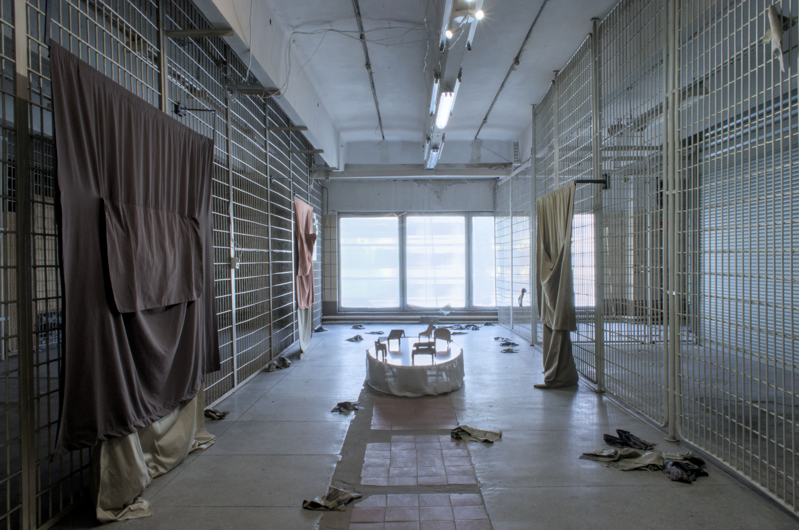

Near Enough
Cian-Ti Wang, Karl Joonas Alamaa
02.08 - 30.08.2026

------------
Near Enough
Opening :
Bringing together two artists from different cultural backgrounds, the exhibition is united by a shared interest in themes of home, departure, memory, and hope. For Taiwanese artist Cian-Ti Wang, this marks the first exhibition in Estonia. The practices of Alamaa and Wang converge around questions of belonging, memory, movement, everyday experience, and the ways in which people create and sustain connections with places, objects, and one another. At the heart of the exhibition are shared and personal spaces, places where people's paths intersect and where habits, relationships, and memories take shape. These can be environments that carry both individual and collective stories. The exhibition explores how memory and belonging continually move between the personal, the shared, and the institutional. Rather than treating them as fixed or clearly defined conditions, it presents memory as an ongoing process of transformation, asking how we carry places with us and how those places, in turn, shape our understanding of where, and with whom, we belong.
Cian-Ti Wang's artistic practice explores food, eating, and familiar objects as ways through which people form connections with home, identity, and one another. Their work intertwines personal experiences with broader social questions, addressing language, religion, history, and social relationships. Wang frequently employs familiar objects, environments, and ritual forms to create installation-based and performative situations that invite viewers into a multilayered emotional landscape. Living in Belgium while originating from Taiwan, their practice is often informed by questions of longing and the search for community.
Ellen Vene is a Tallinn-based visual artist whose practice moves across sculpture, installation and new media. Her site-sensitive works are driven by an interest in the ways materials themselves can carry stories. She often works with non-traditional materials and found objects, allowing their inherent logic to shape the work. Her practice engages with cultural histories and environmental processes, examining how inherited narratives and systems of production continue to shape the present.
Karl Joonas Alamaa's (he/they) practice explores the intersections of personal memory and public space, examining the relationships between power, history, and the individual. He is interested in how people carry memories, everyday traces, and personal meanings with them, and how public spaces and ideologically charged environments shape our understanding of belonging and home. His works weave together intimate and collective perspectives, drawing attention to the threshold between the visible and the overlooked.
Text: Senja Savtšenko